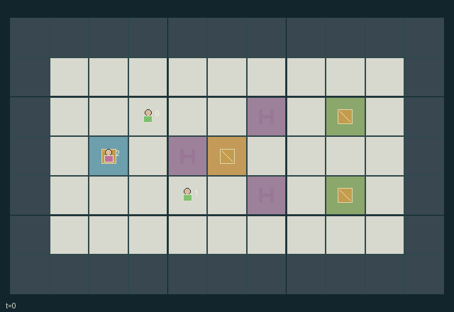

GI154 · Island Spark

Restore and operate a small fictional grid to service three units at each of two sinks, balancing portable charge, spatial repair access and shared line capacity.
Identity and original contract
3 independently actionable roles; 14 discrete commands per role; 150 native observation columns per role; original horizon 160 steps. Declared per-step reward range: -2 to 2. Observation regime: partially_observable.
Source SHA-256: 89509f88d98359279efbc7b4edb01503a0239f859542be02fb65161fd105e187
The objective, rewards, population, map and horizon remain original. A preview is not a success claim.
Objective and gameplay
Restore and operate a small fictional grid to service three units at each of two sinks, balancing portable charge, spatial repair access and shared line capacity.
Repair and switch capabilities complement one another. Live couplers prohibit repair-crew entry, node energization enables remote recharging, and simultaneous demands can trip a shared trunk and deny all downstream requests.
- This is a fictional token-and-grid game, not an electrical engineering model.
- Role 0 repairs, role 1 switches and role 2 black-starts or delivers portable energy.
- A link needs health two, a closed switch and zero cooldown; downstream power depends on the trunk.
- The repair crew cannot enter live coupler cells; repairing requires a de-energized, cool adjacent coupler.
- Source-fed tool charging and sink service are simultaneous requests. Trunk capacity is two; each branch capacity is one.
- An overload opens and damages its line and sets a three-tick cooldown before repair. Downstream requests lose power before fulfillment.
- Portable service bypasses the grid at two charge per sink unit. One-charge gifts require adjacency.
- Starting the source consumes two portable charge and then one fuel per live step. Both sinks completed or fuel exhausted end naturally.
Ending: All three units at both sinks terminate successfully. Exhausting the 120-tick started-source fuel budget before completion terminates a game failure. Otherwise the horizon is 160.
What this game explores
Resource commons & externalities: An action changes a persistent resource or burden that another role also encounters. Compare extraction with maintenance and record the downstream resource trajectory.
Complementary production & service: A useful outcome requires ordered stages, scarce equipment or another role's capability. Measure real completed products and resource circulation rather than counting intermediate actions as success.
Joint transport & shared access: Positions, load geometry, occupancy and persistent access constrain whose action can succeed next. Distinguish physical handoff, shared controls and simultaneous force from a cosmetic cooperation label.
These are questions supported by rule structure, not observed learning effects.
Play it: operating walkthrough
crucibles play --game gi154Keep Python running and open its printed address. Select this game, set a seed and press Create session. The game itself is always English.
Assign a role range to Host with Assign / take over, or Assign all roles. Invite a second participant with Create player invitation, then assign a disjoint subset. Every original role is available.
For every owned role choose a legal command and press Queue. Arrow keys / WASD queue a declared directional action for the current role camera when available. Space or Advance one joint step advances everyone together. Non-directional games use the selectors.
Unqueued roles use the labelled untrained uniform-legal policy. Take over or release roles before the next step without resetting. Full-state debug is privileged and permanently logged; role cameras preserve permissions. Close the session to retain logs. Server restart does not restore sessions.
Complete command reference
IDs and English labels exactly match the manifest. Availability depends on role, resources, location and phase. An available action can still have no productive effect.
0·Wait
1·Move north
2·Move east
3·Move south
4·Move west
5·Repair nearest eligible adjacent coupler; repair crew only
6·Toggle nearest adjacent coupler; switching crew only
7·Black-start source from adjacent cell, spending two charge; energy crew only
8·Service one unmet sink unit while standing at the sink
9·Request one tool-charge unit from nearest node within one cell
10·Deliver one sink unit with two portable charge; energy crew only
11·Give one charge to adjacent agent 0
12·Give one charge to adjacent agent 1
13·Give one charge to adjacent agent 2
Roles and capability identifiers
These original role names describe capabilities, not interchangeable skins. Check each owned role's legal selector before planning handoffs.
agent_0·Repair crew: repairs de-energized couplers
agent_1·Switching crew: opens and closes repaired network links
agent_2·Portable-energy crew: black-starts the source, bypasses the grid or shares charge
Information and observation permissions
Terrain, source fuel, completed demand, node-power indicators and live/trip signals are public. Positions, charge and repair details use Manhattan-radius-3 entity visibility without wall occlusion. Hidden values are -1 with an explicit visibility bit.
The GIF is full-state debug and may reveal hidden entities or private state. Train on obs[agent], not the picture, state tree or another role's private row. Field slices and visibility are in the original manifest.
Reinforcement-learning integration
import jax
from crucibles_jaxmarl import make
env = make("gi154")
key = jax.random.PRNGKey(0)
key, rk, ak, sk = jax.random.split(key, 4)
obs, state = jax.jit(env.reset)(rk)
actions = env.sample_actions(ak, state)
obs, state, rewards, dones, info = jax.jit(env.step_env)(sk, state, actions)
done = dones["__all__"]Observations are float32 vectors of width 150; actions are scalar int32; masks have 14 entries. Supply all 3 roles each transition. Masked sampling is an engineering reference, not a trained learner.
step_env retains terminal data without reset. step performs outer autoreset and keeps terminal data in info["raw_state"] and info["raw_observation"]. Use dones["__all__"] for episode boundaries; separate completion, failure and time limit in analysis.
JIT or vmap equal identities and shapes. Split independent reset, policy and transition keys. Group different shapes explicitly; do not shrink the population or horizon. Host rendering stays outside training.
Training questions and fair evaluation
Define valid completion from the objective before fitting. Preserve original rewards and also report real deliveries/services, losses, resource state, unresolved episodes and per-role returns. Animation is not a reward signal.
An action changes a persistent resource or burden that another role also encounters. Compare extraction with maintenance and record the downstream resource trajectory.
A useful outcome requires ordered stages, scarce equipment or another role's capability. Measure real completed products and resource circulation rather than counting intermediate actions as success.
Positions, load geometry, occupancy and persistent access constrain whose action can succeed next. Distinguish physical handoff, shared controls and simultaneous force from a cosmetic cooperation label.
Compare memory, communication or centralized critics under matched actor information. Declare critic access; keep actor inputs role-filtered. Match partner/opponent distributions, masks, compute and checkpoint selection. Final tests never enter fitting or selection.
Independent training runs or source-pairing blocks are inferential units; episodes from one policy are not independent training replications. Save hashes, keys, versions, device, time and cost. Negative, zero, failed and indeterminate outcomes are valid. No trained checkpoint or target score is supplied.
Classification and evidence
Overlapping editorial labels are reading aids, not proof of novelty, difficulty, strategic equivalence or learning effects.
- Resource commons & externalities
- Evidence
manifest.task.objective: Restore and operate a small fictional grid to service three units at each of two sinks, balancing portable charge, spatial repair access and shared line capacity.
- Complementary production & service
- Evidence
manifest.task.objective: Restore and operate a small fictional grid to service three units at each of two sinks, balancing portable charge, spatial repair access and shared line capacity.
- Evidence
manifest.task.interaction: Repair and switch capabilities complement one another. Live couplers prohibit repair-crew entry, node energization enables remote recharging, and simultaneous demands can trip a shared trunk and deny all downstream requests.
- Evidence
manifest.task.observation_access: Terrain, source fuel, completed demand, node-power indicators and live/trip signals are public. Positions, charge and repair details use Manhattan-radius-3 entity visibility without wall occlusion. Hidden values are -1 with an explicit visibility bit.
- Joint transport & shared access
- Evidence
manifest.actions.10: Deliver one sink unit with two portable charge; energy crew only
- Evidence
scene.rules.1: Role 0 repairs, role 1 switches and role 2 black-starts or delivers portable energy.
Source, receipts and preview limits
The world-only English GIF replays saved untrained legal actions through the original kernel. At most 25 actual endpoints include initial and terminal state; no invented interpolation. It is full-state debug, not the role observation.
Original source, observation slices, manifest and mechanism
Native receipt · Presentation receipt
Engineering passes do not establish learning. Nonzero floating differences remain recorded and undetermined; no new tolerance was introduced. Human scores remain unverified.